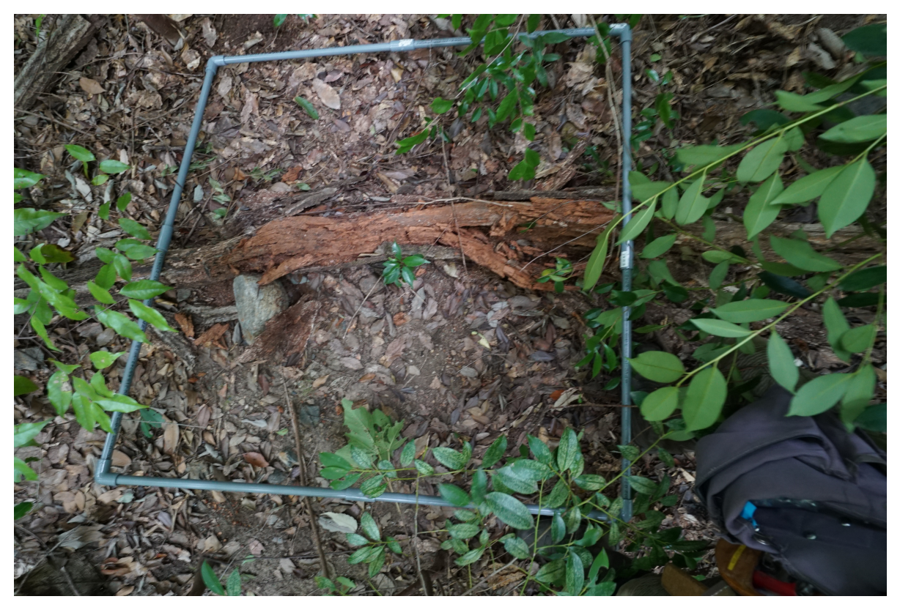
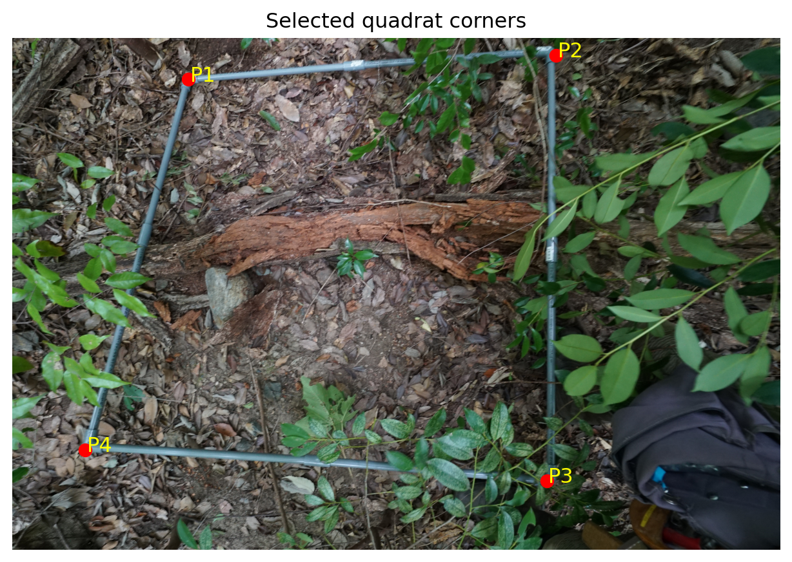
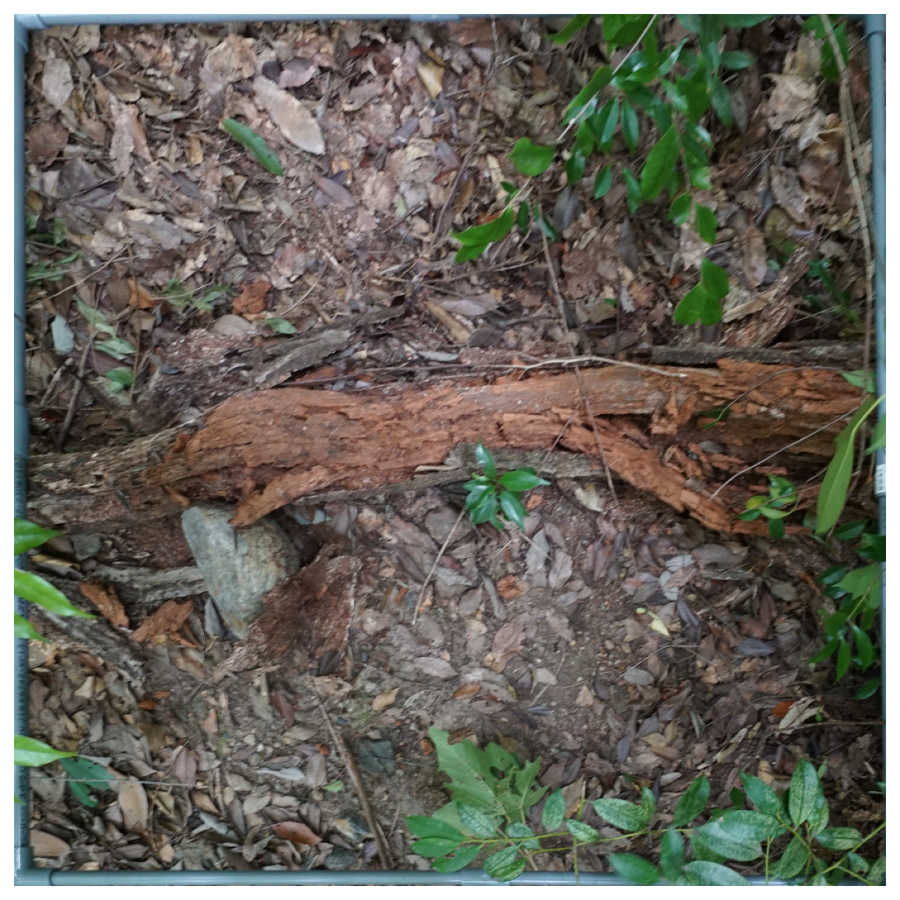
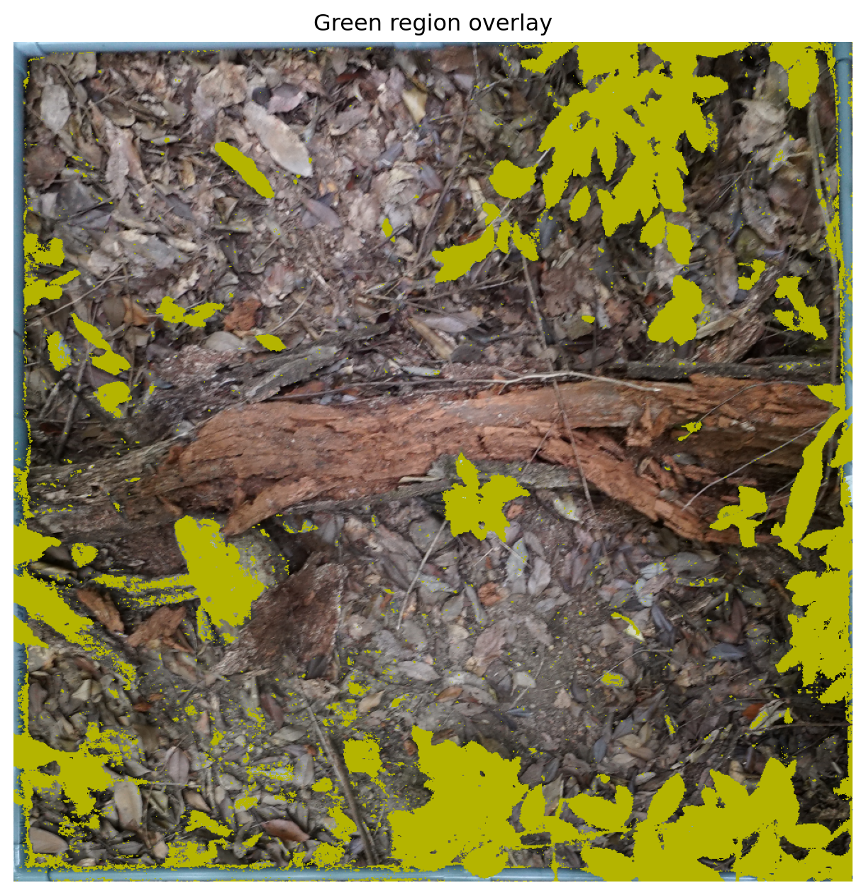
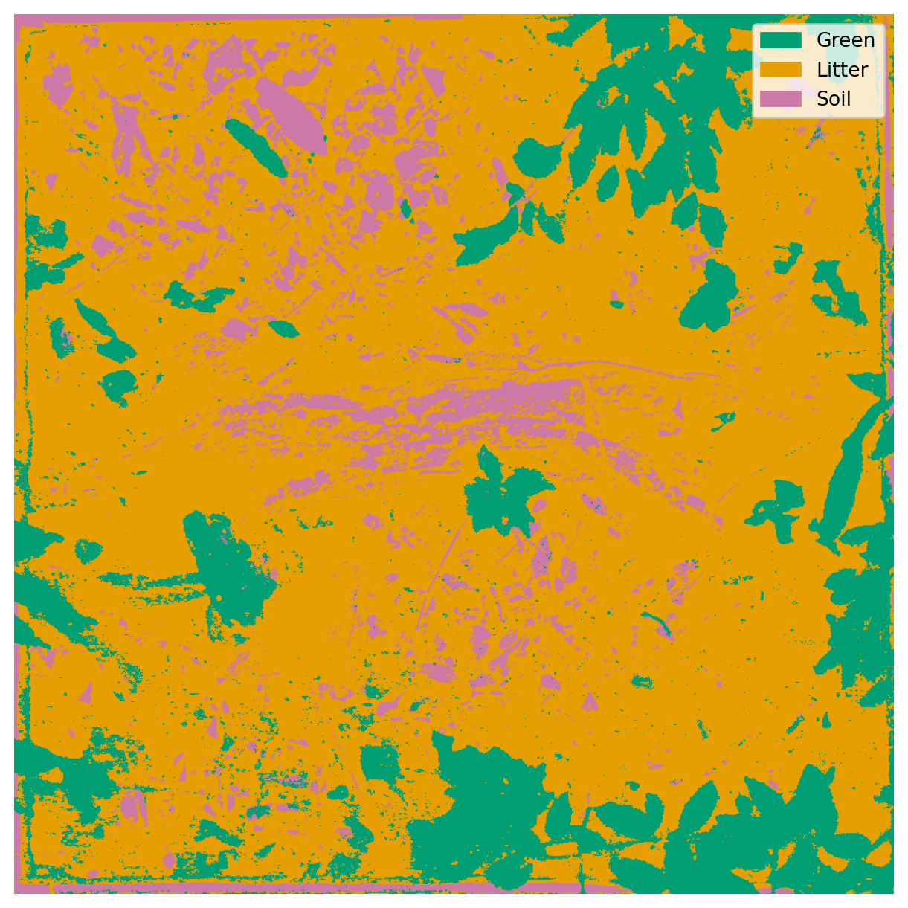
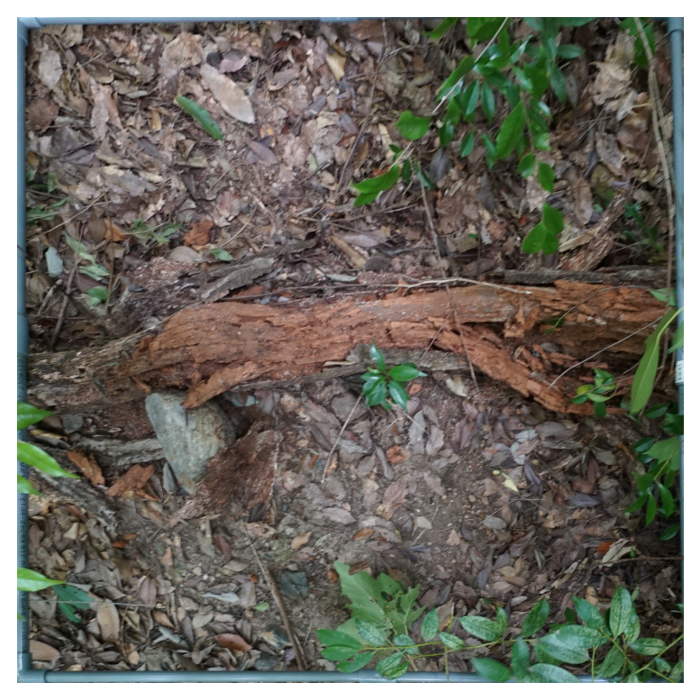
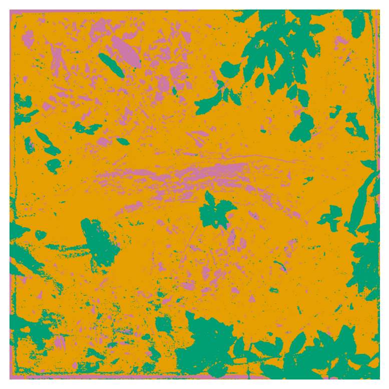

from datetime import datetime
from pathlib import Path
import cv2
import numpy as np
import pandas as pd
import matplotlib.pyplot as plt
import matplotlib.patches as mpatches下層植生の解析について
目的
このノートブックは、下層植生の被覆率を推定するための画像解析の手順を説明するものです。 下層植生にコドラートという1m四方の区画を設置し、その区画を撮影した画像を解析して、植物被覆、リター（落葉・落枝）、地面の割合を推定します。
解析の流れ
次の流れで解析を進めます。
- 画像を読み込む
- コドラートの四隅を指定する
- 射影変換で真上から見た正方形画像に補正する
- HSVしきい値で緑領域を抽出する
- 緑以外の領域からリター(落葉・落枝)を抽出する
- 残りを地面として扱う
- 面積割合を計算し、CSVと画像を保存する
なお、実際の解析では、2のコドラートの四隅の指定や4のHSVしきい値の調整はtkinterというPythonのGUIライブラリ1を使って、画像を見ながらインタラクティブに行いました。
本ノートブックでは、コドラートの四隅の座標やHSVのしきい値を固定値で指定して、解析の流れを説明します。
ライブラリの読み込み
パラメータ設定
生きた植物の緑の部分や、リターの明るめの茶色を抽出するために、HSV色空間を利用して、色相（Hue）と彩度（Saturation）をしきい値で指定します。 今回は、ここで手動で指定した値を使って解析を行いますが、実際の解析では、画像を見ながらインタラクティブに調整していました。
NoteHSV色空間
HSV色空間とは、色を表現する方法の一つで、色相（Hue）、彩度（Saturation）、明度（Value）という3つの要素で色を表現します。
- 色相（Hue）: 色の種類を表す要素で、0から179の値で円のように表されます (色相環)。赤が0、緑が60、青が120に対応します。
- 彩度（Saturation）: 色の鮮やかさを表す要素で、0から255の値で表されます。0は無彩色（グレー）、255は最も鮮やかな色になります。
- 明度（Value）: 色の明るさを表す要素で、0から255の値で表されます。0は完全な黒、255は完全な白になります。
詳細については、HSV色空間についてをご覧ください。
IMAGE_PATH = Path("data/forest_cover_example.JPG") # 解析する画像のパス
WIDTH = 1000 # 出力画像の幅
HEIGHT = 1000 # 出力画像の高さ
OUTPUT_DIR = Path("output") # 結果の出力先ディレクトリ
# コドラートの四隅の座標
# 画像によって変わるので、必要に応じて更新してください
PTS_SRC_MANUAL = [
(970, 230), # 左上
(3000, 95), # 右上
(2950, 2450), # 右下
(400, 2280), # 左下
]
# 緑の領域を抽出するためのHSV範囲
# 画像によって変わるので、必要に応じて更新してください
GREEN_HSV = {
"hmin": 35,
"hmax": 95,
"smin": 0,
"smax": 255,
"vmin": 0,
"vmax": 255,
}
# リターの領域を抽出するためのHSV範囲
# 画像によって変わるので、必要に応じて更新してください
LITTER_HSV = {
"hmin": 0,
"hmax": 179,
"smin": 0,
"smax": 255,
"vmin": 0,
"vmax": 150,
}
# 出力設定
OUTPUT_DIR.mkdir(parents=True, exist_ok=True)
(OUTPUT_DIR / "figures" / "quadrat_warped").mkdir(parents=True, exist_ok=True)
(OUTPUT_DIR / "figures" / "quadrat_segmented").mkdir(parents=True, exist_ok=True)補助関数
4点の順序を整える
四隅の座標の順序は、射影変換の関数に渡す前に、左上 → 右上 → 右下 → 左下 の順になるように整える必要があります。
def order_points_by_angle(pts):
pts = np.array(pts, dtype="float32")
center = np.mean(pts, axis=0)
angles = np.arctan2(pts[:, 1] - center[1], pts[:, 0] - center[0])
ordered = pts[np.argsort(angles)]
idx_topleft = np.argmin(np.sum(ordered, axis=1))
ordered = np.roll(ordered, -idx_topleft, axis=0)
return ordered射影変換
射影変換とは、画像の中の特定の4点を、別の4点に対応させる変換のことです。 今回は、区画の四隅を、幅1000×高さ1000の正方形の四隅に対応させることで、区画を真上から見たような画像に補正します。
def warp_quadrat(image_bgr, pts_src, width=1000, height=1000):
pts_dst = np.array([
[0, 0],
[width - 1, 0],
[width - 1, height - 1],
[0, height - 1],
], dtype="float32")
M = cv2.getPerspectiveTransform(pts_src, pts_dst)
warped = cv2.warpPerspective(image_bgr, M, (width, height))
return warped, MHSV 範囲でマスクを作成
def make_hsv_mask(hsv_image, hsv_params):
lower = np.array([hsv_params["hmin"], hsv_params["smin"], hsv_params["vmin"]])
upper = np.array([hsv_params["hmax"], hsv_params["smax"], hsv_params["vmax"]])
return cv2.inRange(hsv_image, lower, upper)結果保存
def save_results(
image_path,
output_dir,
warped,
segmented,
green_ratio,
litter_ratio,
soil_ratio,
green_params,
litter_params,
):
image_path = Path(image_path)
basename_with_ext = image_path.name
basename = image_path.stem
time_str = datetime.now().strftime("%Y/%m/%d %H:%M:%S")
df = pd.DataFrame({
"file_path": [str(image_path)],
"file_name": [basename_with_ext],
"time": [time_str],
"green_ratio": [green_ratio],
"litter_ratio": [litter_ratio],
"soil_ratio": [soil_ratio],
"hmin_green": [green_params["hmin"]],
"hmax_green": [green_params["hmax"]],
"smin_green": [green_params["smin"]],
"smax_green": [green_params["smax"]],
"vmin_green": [green_params["vmin"]],
"vmax_green": [green_params["vmax"]],
"hmin_litter": [litter_params["hmin"]],
"hmax_litter": [litter_params["hmax"]],
"smin_litter": [litter_params["smin"]],
"smax_litter": [litter_params["smax"]],
"vmin_litter": [litter_params["vmin"]],
"vmax_litter": [litter_params["vmax"]],
})
csv_path = output_dir / "classify_quadrat_regions.csv"
if csv_path.exists():
existing_data = pd.read_csv(csv_path)
combined = pd.concat([existing_data, df], ignore_index=True)
combined = combined.drop_duplicates(subset="file_name", keep="last")
else:
combined = df
combined.to_csv(csv_path, index=False, encoding="utf-8")
warped_path = output_dir / "figures" / "quadrat_warped" / f"{basename}.jpg"
segmented_path = output_dir / "figures" / "quadrat_segmented" / f"{basename}.jpg"
cv2.imwrite(str(warped_path), warped)
cv2.imwrite(str(segmented_path), segmented)
return csv_path, warped_path, segmented_path解析
1. 画像の読み込み
ここから実際の解析の手順を説明します。 まずは、解析する画像を読み込みます。
if not IMAGE_PATH.exists():
raise FileNotFoundError(f"画像が見つかりません: {IMAGE_PATH}")
image_bgr = cv2.imread(str(IMAGE_PATH))
if image_bgr is None:
raise RuntimeError("画像の読み込みに失敗しました。")
image_rgb = cv2.cvtColor(image_bgr, cv2.COLOR_BGR2RGB)
print("画像ファイルのパス:", IMAGE_PATH)
print("画像のサイズ:", image_bgr.shape)画像ファイルのパス: data/forest_cover_example.JPG
画像のサイズ: (2832, 4240, 3)読み込んだ画像を確認します。
fig, ax = plt.subplots(figsize=(8, 8))
ax.imshow(image_rgb)
ax.axis("off")
plt.show()
2. コドラートの四隅を指定する
コドラートの四隅を指定します。
pts_src = order_points_by_angle(PTS_SRC_MANUAL)
pts_srcarray([[ 970., 230.],
[3000., 95.],
[2950., 2450.],
[ 400., 2280.]], dtype=float32)
Note画像処理における座標系
画像処理においては、基本的に左上が原点(0, 0)で、右に行くほどx座標が大きくなり、下に行くほどy座標が大きくなる座標系が使われます。 数学の教科書などで使われる、原点は中心で、右に行くほどx座標が大きくなり、上に行くほどy座標が大きくなる座標系とは逆になることに注意してください。
画像に指定した4点をプロットして、正しい位置に指定できているか確認します。
fig, ax = plt.subplots(figsize=(8, 8))
ax.imshow(image_rgb)
for i, (x, y) in enumerate(pts_src):
ax.scatter(x, y, c="red", s=50)
ax.text(x + 10, y + 10, f"P{i + 1}", color="yellow", fontsize=12)
ax.set_title("Selected quadrat corners")
ax.axis("off")
plt.show()
3. 射影変換で正方形に補正する
src_ptsで指定した4点を、幅1000×高さ1000の正方形の四隅に対応させる射影変換を行います。 これにより、区画を真上から見たような画像に補正し、解析しやすくします。
Note射影変換
射影変換 (perspective transformation) とは、画像の中の特定の4点を、別の4点に対応させる変換のことです。 この変換には、画像の拡大・縮小、回転、平行移動に加えて、遠近法による歪みも補正することができます。
これにより、任意の四角形を別の四角形に移すことができるため、斜めから撮影した画像を、真上から見たような画像に補正することができます。
詳細については、射影変換についてをご覧ください。
warped_bgr, transform_matrix = warp_quadrat(
image_bgr=image_bgr,
pts_src=pts_src,
width=WIDTH,
height=HEIGHT,
)
warped_rgb = cv2.cvtColor(warped_bgr, cv2.COLOR_BGR2RGB)
transform_matrixarray([[ 6.32883634e-01, 1.75972523e-01, -6.54370805e+02],
[ 4.64837471e-02, 6.98977827e-01, -2.05854135e+02],
[ 8.22125317e-05, 1.64443690e-04, 1.00000000e+00]])fig, ax = plt.subplots(figsize=(8, 8))
ax.imshow(warped_rgb)
ax.axis("off")
plt.show()
4. 緑領域を抽出する
生きた植物がどのくらいコドラートを被覆しているかを推定するために、緑の領域を抽出します。 今回は、HSV色空間で指定した範囲を使って、緑の領域を抽出します。
しかし、植物によって葉の色が異なったり、光の当たり方によって同じ葉でも色が変わったりするため、緑の領域を完全に抽出することは難しいことが多いです。
hsv = cv2.cvtColor(warped_bgr, cv2.COLOR_BGR2HSV)
mask_green = make_hsv_mask(hsv, GREEN_HSV)green_overlay = warped_rgb.copy()
green_overlay[mask_green > 0] = [180, 180, 0]
plt.figure(figsize=(8, 8))
plt.imshow(green_overlay)
plt.title("Green region overlay")
plt.axis("off")
plt.show()
緑の領域が全体の何割を占めているか計算します。 これが被度の推定値になります。
total_pixels = mask_green.shape[0] * mask_green.shape[1]
green_pixels = cv2.countNonZero(mask_green)
green_ratio = green_pixels / total_pixels
print(f"green_ratio = {green_ratio:.4f} ({green_ratio * 100:.2f}%)")green_ratio = 0.1843 (18.43%)5. 緑以外からリターを抽出する
植物被覆以外の領域は、リター（落葉・落枝）と地面に分けて考えることができます。 リターは、明るめの茶色の領域として抽出できることが多いです。
ここでは、緑の領域を除いた領域から、リターを抽出します。 これで、緑の領域、リターの領域、地面の領域の3つに分類することができます。
mask_not_green = cv2.bitwise_not(mask_green)
mask_litter_raw = make_hsv_mask(hsv, LITTER_HSV)
mask_litter = cv2.bitwise_and(mask_litter_raw, mask_not_green)6. 地面を残差として定義する
植物の緑の領域とリターの領域を抽出した後、残りの領域を地面として定義します。 実際にはリターと地面の境界は曖昧なことが多いですが、ここでは単純に緑とリター以外を地面とします。
mask_soil = cv2.bitwise_and(mask_not_green, cv2.bitwise_not(mask_litter))
litter_pixels = cv2.countNonZero(mask_litter)
soil_pixels = cv2.countNonZero(mask_soil)
litter_ratio = litter_pixels / total_pixels
soil_ratio = soil_pixels / total_pixels
print(f"green_ratio = {green_ratio:.4f} ({green_ratio * 100:.2f}%)")
print(f"litter_ratio = {litter_ratio:.4f} ({litter_ratio * 100:.2f}%)")
print(f"soil_ratio = {soil_ratio:.4f} ({soil_ratio * 100:.2f}%)")
print(f"sum = {(green_ratio + litter_ratio + soil_ratio):.4f}")green_ratio = 0.1843 (18.43%)
litter_ratio = 0.7140 (71.40%)
soil_ratio = 0.1017 (10.17%)
sum = 1.00007. 最終分類画像を作る
植物被覆、リター、地面の領域を色分けして、最終的な分類画像を作ります。 植物被覆を緑、リターをオレンジ、地面を紫で表示します。
segmented_bgr = warped_bgr.copy()
segmented_bgr[mask_green > 0] = (115, 158, 0)
segmented_bgr[mask_litter > 0] = (0, 159, 230)
segmented_bgr[mask_soil > 0] = (167, 121, 204)
segmented_rgb = cv2.cvtColor(segmented_bgr, cv2.COLOR_BGR2RGB)fig, ax = plt.subplots(figsize=(8, 8))
ax.imshow(segmented_rgb)
ax.axis("off")
legend_handles = [
mpatches.Patch(color=(0 / 255, 158 / 255, 115 / 255), label="Green"),
mpatches.Patch(color=(230 / 255, 159 / 255, 0 / 255), label="Litter"),
mpatches.Patch(color=(204 / 255, 121 / 255, 167 / 255), label="Soil"),
]
plt.legend(handles=legend_handles, loc="upper right", frameon=True)
plt.show()
もとの画像と並べて表示します。
fig, axes = plt.subplots()
axes.imshow(warped_rgb)
axes.axis("off")
plt.show()
fig, axes = plt.subplots()
axes.imshow(segmented_rgb)
axes.axis("off")
plt.show()

8. 結果を表として確認する
データフレームにまとめて、緑、リター、地面の割合を確認します。
summary_df = pd.DataFrame({
"class": ["green", "litter", "soil"],
"ratio": [green_ratio, litter_ratio, soil_ratio],
"percent": [green_ratio * 100, litter_ratio * 100, soil_ratio * 100],
})
summary_df| class | ratio | percent | |
|---|---|---|---|
| 0 | green | 0.18431 | 18.431 |
| 1 | litter | 0.71397 | 71.397 |
| 2 | soil | 0.10172 | 10.172 |
9. CSV と画像を保存する
最後に、解析結果をCSVファイルと画像ファイルとして保存します。 CSVファイルには、画像のファイル名や解析日時、緑・リター・地面の割合、HSVのしきい値などを保存します。 画像ファイルは、補正した画像と、分類結果を色分けした画像を保存します。
csv_path, warped_path, segmented_path = save_results(
image_path=IMAGE_PATH,
output_dir=OUTPUT_DIR,
warped=warped_bgr,
segmented=segmented_bgr,
green_ratio=green_ratio,
litter_ratio=litter_ratio,
soil_ratio=soil_ratio,
green_params=GREEN_HSV,
litter_params=LITTER_HSV,
)
print(f"CSV path: {csv_path}")
print(f"Warped image path: {warped_path}")
print(f"Segmented image path: {segmented_path}")CSV path: output/classify_quadrat_regions.csv
Warped image path: output/figures/quadrat_warped/forest_cover_example.jpg
Segmented image path: output/figures/quadrat_segmented/forest_cover_example.jpgFootnotes
GUI (Graphical User Interface) とは、マウスやキーボードを使って視覚的に操作できるインターフェースのことです。
tkinterはPythonでGUIアプリケーションを作成するための標準ライブラリです。↩︎